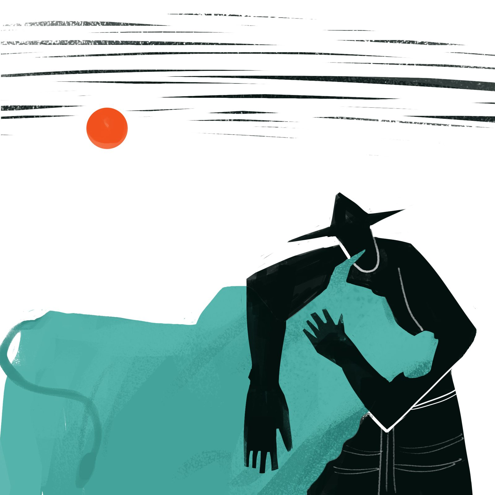

Cattle Are Disappearing from the Satkhira Coast

Buri Goalini is the name of a union in Shyamnagar Upazila of Satkhira, on the edge of the Sundarbans. The area got the name because of its reputation for raising cattle, especially cows, and selling milk. History and research show that among the 19 districts of Bangladesh's coastal region, Satkhira has been famous since ancient times for sweets and chhana (fresh cheese) because milk was so easy to get. So many cows were raised here that milk was carried by boat to Kolkata.
Just one or two decades ago, rearing livestock was one of the main sources of income for people here. Many families lived by selling cow's milk. Now raising cattle, especially cows, has fallen almost to zero.
Climate change is the cause. Frequent cyclones and floods let in saline water, and salinity in farmland has risen. Farmers have replaced crops with fish enclosures, and salinity has ruined grazing land. Raising cattle is no longer possible.
Two decades ago, Habibur Rahman of Atulia Union in Shyamnagar spent 200,000 taka building a cattle shed. He started a business with 30 cattle and two employees, and the first few years went well. In 2009, cyclone Aila brought in saline water. Some cattle died and disease began. Salt water also reduced the grass and straw, so he had to rely on costly market feed. He never saw a profit again and finally had to give up cattle rearing.
Habibur Rahman of the Nildumur area in Buri Goalini Union had 17 cattle a decade ago. Selling milk from 8 cows earned him 9,000 to 10,000 taka a month, and selling some cattle at the end of the year earned about 100,000 taka. Now the shed is there, but there are no cows in it.
Shawkat Hossain of Biralakhmi in Atulia Union had 14 cows nine years ago and lived comfortably on milk sales. Now he has two cows in his shed, both sick with various diseases.
Sonaban Begum of the same area had 31 goats a decade ago. Now she struggles to keep three.
It is not only cows. Goat and sheep rearing has declined too. Fish from the wetlands, such as tor, lata and shoul, and birds such as kites, vultures, parrots, magpie robins and starlings have also dwindled. As salinity rose, palm, arjun and betel nut trees declined significantly.
Ghazi Al Imran, executive director of the NGO CDO, says that rising saline water in coastal areas because of climate change has hampered rice farming. As an alternative, people have turned to shrimp farming, so grazing land for cattle fodder is lacking. They cannot raise cows by buying bran, husk and oil cake at high prices. Raising cows on market feed brings loss, not profit.
Local veterinarian Swapan Kumar Mondal says that with rising salinity, shrimp farming has expanded and grazing land has shrunk. With no safe drinking water or freshwater ponds for cattle, they drink saline water, which gives them food poisoning, bloating and diarrhea.
Mahbub Hossain, Satkhira District Livestock Officer, says frequent floods bring in saline water and make cattle rearing impossible.
Pavel Partha, an ecology researcher and director of the Bangladesh Resource Centre for Indigenous Knowledge (BARCIK), says cattle rearing began declining in this region from 2000 and became acute by 2010. Because of climate change, cyclones strike three or four times a year, breach the embankments and let saline water into settlements. Unplanned shrimp farming also raises salinity. In the past, native rice fields grew jhewlo, chamna and kechuri grass, which are cattle fodder. Now, hoping for higher profit, the farmland that remains grows BRRI dhan 28 and 29, with herbicides, so fodder grass does not grow.
On the way out of this situation, Pavel Partha says unplanned shrimp farming must stop. Canals must be freed from leases and dredged deeper and wider, so that flood water cannot enter the fields. People must be encouraged to raise the native cattle of earlier times. Farmers should get interest-free loans to support cattle rearing, and the government should train them in making feed and running farms.
Charts and interactives by Coastal Voices. All figures come from the reporting above.